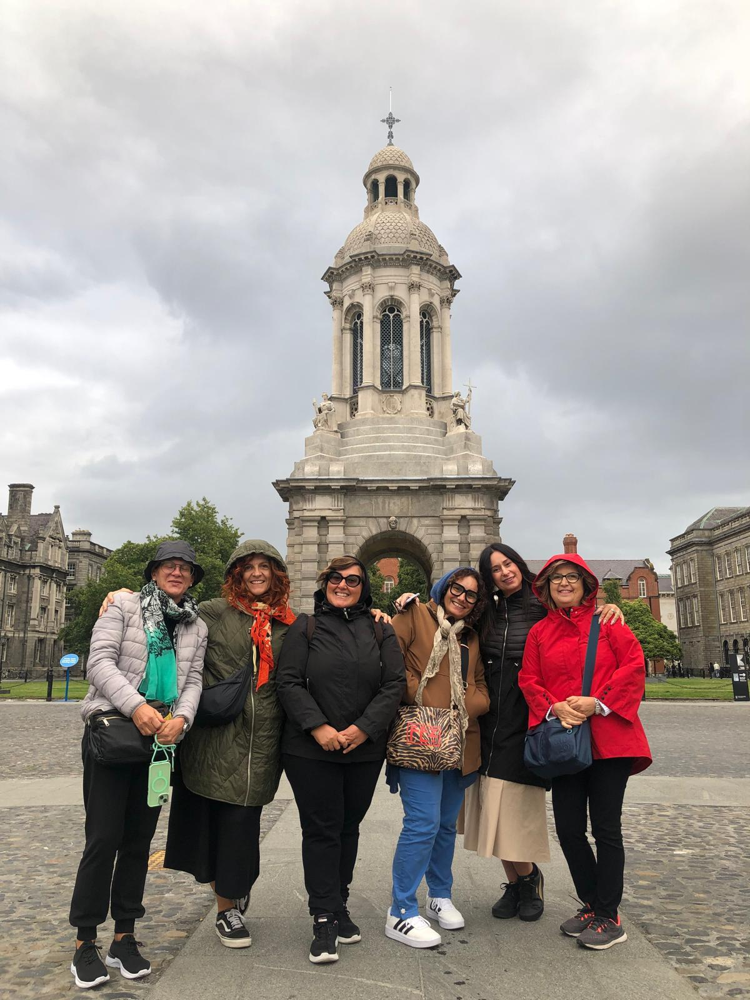
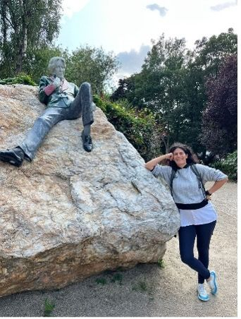
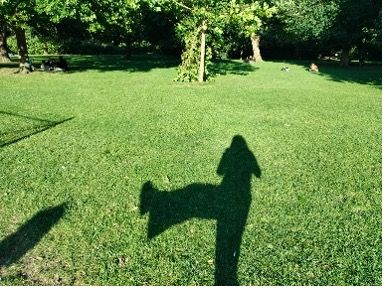
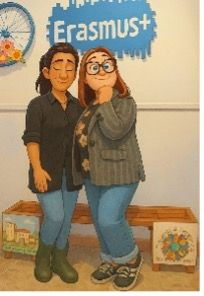

Courses & Training
Dublin
Corsi di formazione per docenti nella capitale irlandese: lingua, metodologie e nuovi colleghi da tutta Europa.
16 foto · 4 storie


Le loro storie
-

Apre la mente e lo sguardo a nuove culture, spinge — e allo stesso tempo permette — di rimettersi in gioco anche quando non si è più giovanissimi, aiuta a superare i pregiudizi e spalanca la strada a nuove scoperte.
Prof.ssa Marcucci -

L’Erasmus allunga le prospettive.
Prof.ssa Nada Carota -

Frequentare il corso a Dublino mi ha consentito di riscoprire l’Europa con persuasa consapevolezza, ridestando, tuttavia, nel mio animo la gioia e la curiosità che solo l’esperienza di studio in mobilità Erasmus può donare.
Prof.ssa Castagna -
Mai come adesso è necessario… per ricordarci le radici storiche, etiche, sociali dell’Europa:
Esperienza
Regole
Anime
Sostenibilità
Merito
Unione
Scoperte
… quindi, per i docenti, ancora di più!Prof.ssa Panone